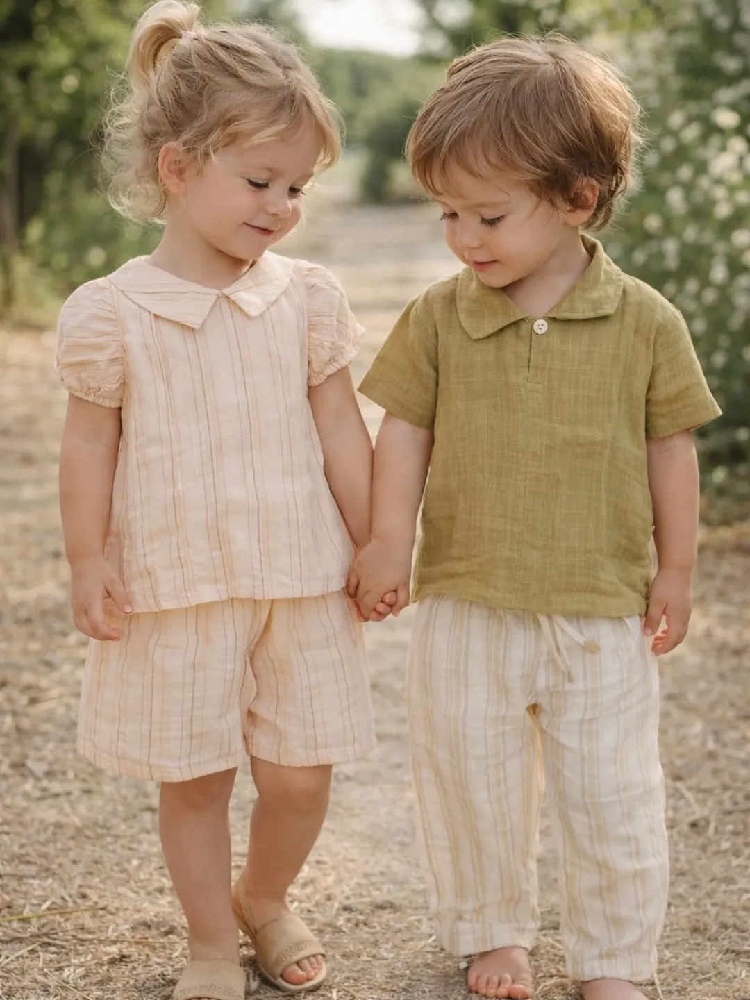

Da 0 a 14 anni, con amore
Abbigliamento per la nascita, per tutti i giorni e per le cerimonie. In Viale Guglielmo Marconi 62, accanto a KIOS.
Biocotton, made in ItalyBamboom, bambù organicoPetit BateauMayoral

Lista nascita onlinei parenti regalano anche da lontano
Collezione autunno-inverno
Novità Kids
I marchi
Scelti per i più piccoli
PETIT BATEAULinea nascita e bambini
MAYORALCollezione autunno-inverno 2026
BIOCOTTONMade in Italy
BAMBOOMBambù organico, linea nascita
LOSANModa bambina
KAPPACompletini dai 2 ai 16 anni
KIOS · GIFT CARD
da 25 €
Valida in negozio e onlineIdee regalo
Non sai cosa regalare?
Idee regalo a partire da 5 euro, in negozio e online. Oppure una gift card: sceglie chi la riceve.
Idee regalo